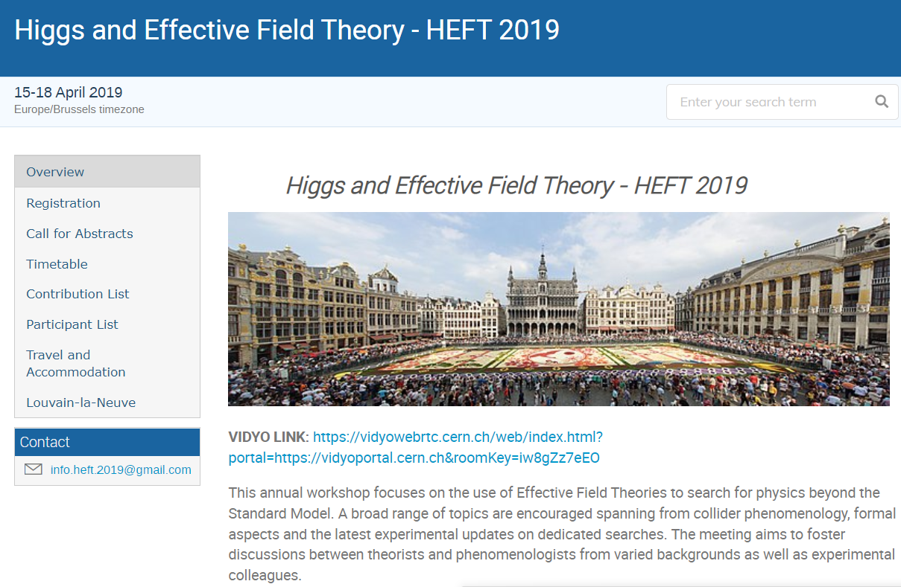

{% include base_path %}

{% if post.header.teaser %}
  {% capture teaser %}{{ post.header.teaser }}{% endcapture %}
{% else %}
  {% assign teaser = site.teaser %}
{% endif %}

{% if post.id %}
  {% assign title = post.title | markdownify | remove: "<p>" | remove: "</p>" %}
{% else %}
  {% assign title = post.title %}
{% endif %}


 <div class="row mb-2  shadow-sm pb-2 pt-3" style="border-bottom-style:solid">
		        <div class="col-12 col-lg-5 me-md-5">
		          <figure class="figure mb-2 mt-2 mx-3">
				  
		         <!--     -->
					
					
					{% if post.image %}	
					<a href="{{post.talkurl}}">
					
	                </a>
                    {% endif %}
		          
		        </figure>
				
		        </div>
		        
		        <div class="col col-lg-6 p-3">
		        <h4>{{post.title }}</h4>
			        <ul class="talk-meta list-inline mb-2">
				        <li class="list-inline-item me-3">
                        <!--
						{% if post.read_time %}
                        <p class="page__meta"><i class="fa fa-clock-o" aria-hidden="true"></i> {% include read-time.html %}</p>
                        {% endif %}  -->

                        {% if post.date %}<p class="page__meta"><i class="far fa-clock me-2" aria-hidden="true"></i> 
						{{ post.date | date: '%B %d, %Y' }}</p>
						{% endif %}

						</li>
				      
			        </ul>
			        <div class="talk-content">
				        <p>
						{{post.content}}
						<!--
                       {% if post.excerpt and site.read_more != 'enabled' %}
                       <p class="archive__item-excerpt" itemprop="description">{{ post.excerpt | markdownify }}</p>
                       {% elsif post.excerpt and site.read_more == 'enabled' %}
                       <p class="archive__item-excerpt" itemprop="description"><p>{{ post.excerpt | markdownify | remove: '<p>' | remove: '</p>' }}<strong><a href="{{ base_path }}{{ post.url }}" rel="permalink"> Read more</a></strong></p></p>
                       {% endif %} -->
                        </p>
                        <p>
						<a class="text-link" href="{{ post.talkurl }}" target="_blank" >more details</a>... 
						
						
						</p>
				        
			        </div><!--//talk-content-->  
		        </div><!--//col--> 
	        </div><!--//row-->       
			
	
